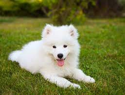

Maltese Terrier ile Yorkshire Terrier’in melezlenmesi sonucu oluşturulan Morkie’ler, sadık, sevecen, nazik ve güvenilir bir karaktere sahiptir. En beğenilen melez ırklardan biri olan Morkie, 4-5 kiloya kadar çıkabilir.
- Morkie
- Golden Retriever
- Samoyed
- Cavapoo
- Cockapoo
Golden Retriever’ın itaat etmeye hazır yapısı nedeniyle eğitimi çok keyifli geçer. Diğer hayvanlar dahil herkesle dost canlısı olduğundan ondan koruma görevi beklenmemelidir. Saldırganlık göstermemelerine rağmen Golden’lar gelen yabancıya havlayarak haber vererek iyi bekçilik edebilirler. İnsandan izole edildiğinde ya da uzun süre sevdiklerinden uzak tutulduğunda yaramazlık yapmaya başlar. Çok hareketli ve ilgi isteyen köpeklerdir.
Bembeyaz uzun tüyleri ve daima gülen yüzü ile tanınırlar. Dayanıklılığı sayesinde uzun mesafeler boyunca kızak çekebilir. Aynı zamanda Mors avcılığında, bekçilikte ve sürü bekçiliğinde de kullanılmıştır. Arkadaş canlısı, iyi huylu, zeki bir ırktır. Güçlü, dayanıklı bir yapısı vardır. Yüksek enerji seviyesine sahiptir.
Cavapoo ırkı köpekler enerjik olmaları nedeniyle, sahiplerinin onu sürekli takibi gerekebilir. Sahibiyle vakit geçirmekten, oyun oynamaktan, kucağında olmaktan çok mutlu olur. Sahibine çok bağlı olduğu için yalnız kalmaktan hoşlanmaz, onların ilgisizliği karşısında mutsuz olurlar. Zeki köpekler olduğu için, kolayca köpek eğitimi alabilirler. Sevgi dolu köpeklerdir; insanlarla, ev hayvanlarıyla, çocuklarla çok iyi anlaşırlar.

Cockapoo da, Cavapoo gibi arkadaş canlısıdır, çocuklarla, insanlarla, hayvanlarla iyi anlaşır. Daha aktiftirler ve bir Cavapoo’dan daha fazla egzersiz ihtiyaçları vardır. Tüyleri benzese de, Cockapoo, Cavapoo’dan daha incedir. Cockapoo, Cocker Spaniel’den gelen genleri göz önüne alındığında, genellikle Cavapoo’dan daha büyük kulaklara sahiptir. Ancak, Cavapoo, Cockapoo’ya göre daha sakin mizaçlıdır.